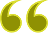

My Projects
Swipe for more projects
About Me
I have always been interested in the digital world, and the endeless ways to make everyday life easier and more entertaining.
First, I tried my hands on the art of graphic design, but those hands were not cooperating. Then doing my Multimedia Design education I focused on the coding, which worked better for me, as I started to enjoy it more and more, it just feels great to make ideas come to life.
The more I learn, the more I want to know, as I realize just how much more I have yet to learn. I love diving into topics, and try to understand what happens behind the scenes. Because I learn the best when I can draw from the experiences of others and try it out myself. For the same reasons, I love to share my knowledge with others, when working in a team.
I am a detail-oriented and dedicated worker, who try to make everything right. If the solution is not smooth and easy to understand for the consumer, it can be improved. So, if you want someone who takes thier job serious, with a good work ehtic, but still have time for fun, let us get in touch.
My spare time:

Golf

Video Games

Computer
I have experience with:
Contact
martinboesen@hotmail.com
+45 3055 9185
What other people say about me

Lige nu er du stærkest i kodningen og du har også medbragt ret fine skitser. Jeg tror du kan blive stærk i lige det du har lyst til.
Du er kreativ, dygtig programmør, selvstændig.
Du er dygtig til det du laver. Du er god til at lære fra dig. Du er god til at få sjove ideer og skitsere den gennem prototyping.